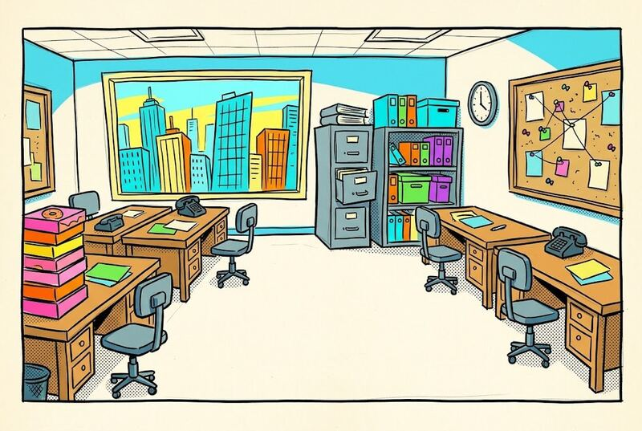
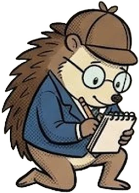
Level 1 Doodler
CharacterOne character portrait. One character, one clear picture.
PlaceOne empty room, with nobody in it.
Look closely asksWhat can you see?
Follow the numbers. Every drawn screen has numbered pins, and every pin matches a numbered step.
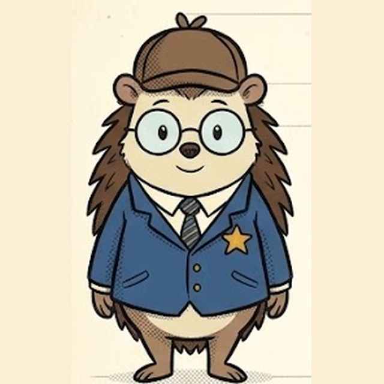
Study a picture and say what is really there before you ask an AI for anything.
Pick exact words, so your picture comes out the way you planned. The helper wants 10 words of your own.
Use the same words for your character in every prompt, so the same face and clothes come back.
Choose one set of colours. The colour words go into every prompt, word for word.
No words, no captions, no speech bubbles, no other characters, or the tool fills the gaps with its own ideas.
Ask your tool to describe the picture, then find what was asked for and not seen, and what turned up unasked.
A single change shows which word did the work. That is how prompt skill grows.
Put pictures and words in order on a comic page.
A free website made by Glenn Malcolm for children aged 9 to 12, and for the teachers who run it. It works in five steps: look closely at a picture, choose and describe, create with AI, check and improve, then build your comic.
Paws & Order helps you with the words. Your picture is made in a separate image tool. The characters are all original: Inspector Nettle, Sergeant Rocco, Chief Grumbleton and their friends in Doodleville.
Working through every part takes about 45 to 50 minutes. Today you add one picture and one character to a comic page. The rest of the Comic Maker is for later.
Type this address into any web browser:
Teachers who run it in class make their own workshop code on the site’s Teachers page.
Without style words, image tools drift to a shiny, realistic look.
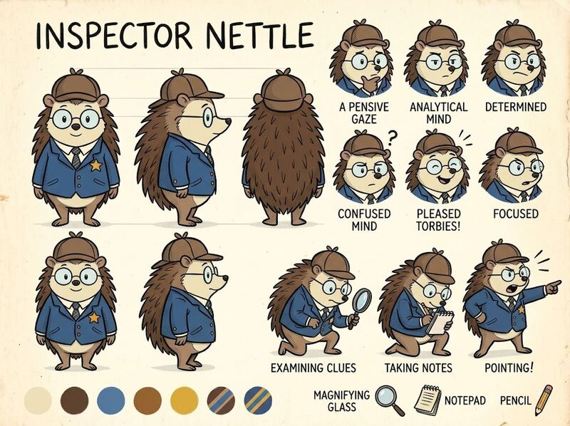
The kind of result these words aim for: Inspector Nettle’s own character sheet from the site.
Do every step in order. The yellow numbered circles say what to do. Boxes marked “New to AI?” explain the basics. Press a circle to tick it off, and the guide remembers where you are.
Show the quick path: only the key steps, about 0 of 0. “Going faster?” challenges appear at the end of each part. The other steps are still here if you switch back.
Put in today’s workshop code. It switches on the prompt helper, so you never need an AI key.
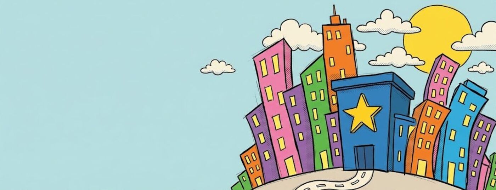
Make your first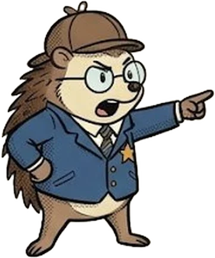
Keep this guide in one window and the site in another, side by side, so you never lose your place.
Mac: hover over the green button at the top left of this window and choose to tile it to the left. Then pick the site’s window for the right.
Windows: click this window, press the Windows key and the left arrow, then pick the site’s window.
Chromebook: press Alt and [ for this window, then Alt and ] for the site’s window.
iPad: in Safari, tap the three dots at the top of the screen, then Split View.
Guide and site in one window, as two tabs? Drag the site’s tab out, so it becomes a window of its own.
An AI image tool is a chat box that draws. You describe a picture and it makes one. Paws & Order does not draw. It helps you write the description, called a prompt, and then helps you check what the image tool made.
Copy and paste: select the text, press Ctrl+C (Cmd+C on a Mac), click where it should go, then press Ctrl+V (Cmd+V). On a tablet, press and hold the text and choose Copy, then press and hold in the new place and choose Paste.
Step 1 on the site. Look at a picture and put it into words before you ask an AI for anything.
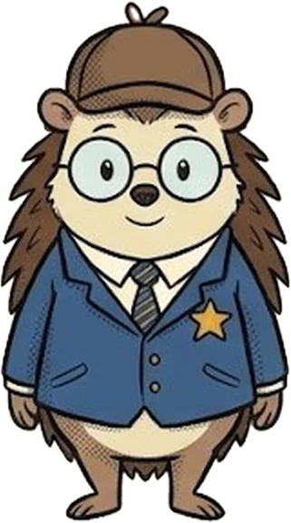
Together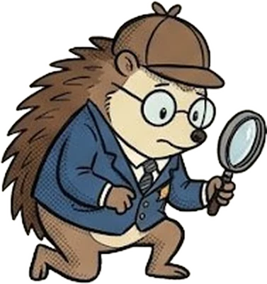
Solo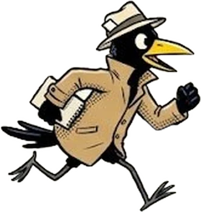
Explore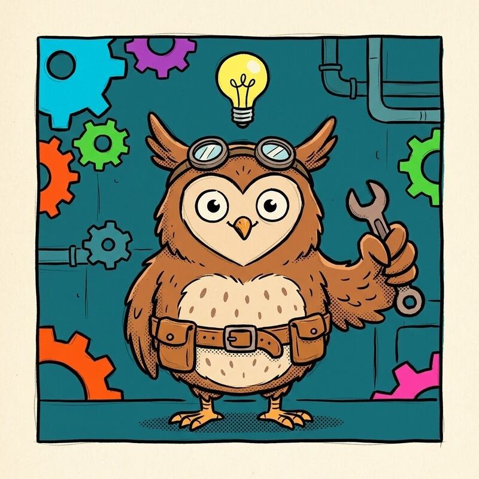
Answer one question at a time. Point at things. Say what is there, what they wear or hold, what it is made of and what colours you can see. Short phrases are fine.
Choose Explore and press Shuffle for another picture at any level. Try Level 3, “The world”, on a place, then swap with a neighbour: whose words would let a stranger draw the same picture?
Step 2. Pick who, the colours, a level and your image tool, then write your brief.
The prompt helper writes better prompts when you have looked properly first. If your words miss the basics, it asks a question or two before it writes anything. The looking is the lesson.
Do it again with A place. Doodler is one empty room, Sketcher is two rooms in one building, and Storyteller is one street in three shots, with the same time of day, weather and colours in every picture.
Step 3. Get your prompt here, then make the picture in your image tool.
This picture is the site’s own Inspector Nettle sheet, standing in for a result.
28 Back on Paws & Order: Did you make your picture?Any of them will do: Gemini, ChatGPT, Copilot, Canva or any image maker. If a tool draws extras you did not ask for or adds words to the picture, that is normal, and it is exactly what step 4 is for.
Step 4. Compare what you asked for with what you got, then change one thing.
A word in your tool’s description that pulled away from what you asked for. If it says “cluttered” and your prompt never did, ask which word in your prompt could pull it back.
At Storyteller, a second box appears: “What my tool says is in the reference picture”. Ask the same question about the picture you were aiming for. The gap between the two answers is the gap you are closing.
Step 5. Put your picture in the Comic Maker and stand one of the gang in it. The rest is listed for later.
That is fine. A picture with a character in it is a real first comic panel. The rest of the Comic Maker is listed in the box below for later.
Add a second picture in another panel with a different character. Then open the box below and try a Speech balloon.


CharacterOne character portrait. One character, one clear picture.
PlaceOne empty room, with nobody in it.
Look closely asksWhat can you see?
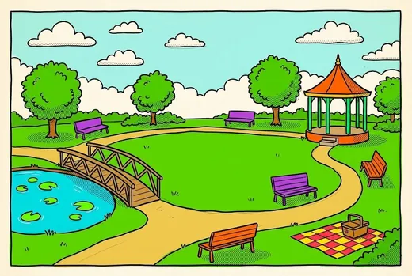
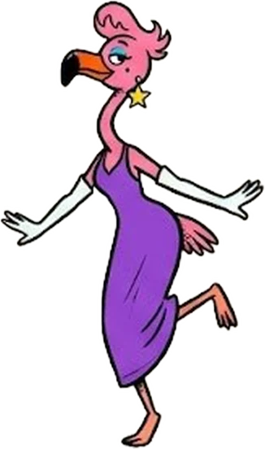
CharacterThe same character in a place. Copy the shared words word for word every time, or your character will change.
PlaceTwo rooms, one building.
Look closely asksThe details.
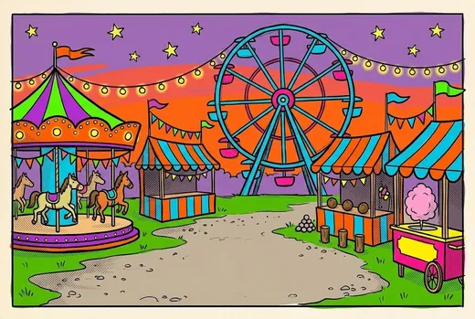
CharacterA three-picture story. Plan the shots with an AI partner before you make anything.
PlaceOne street, three shots, with the same time of day, weather and colours in every picture.
Look closely asksThe world.
Every great story starts with a closer look…